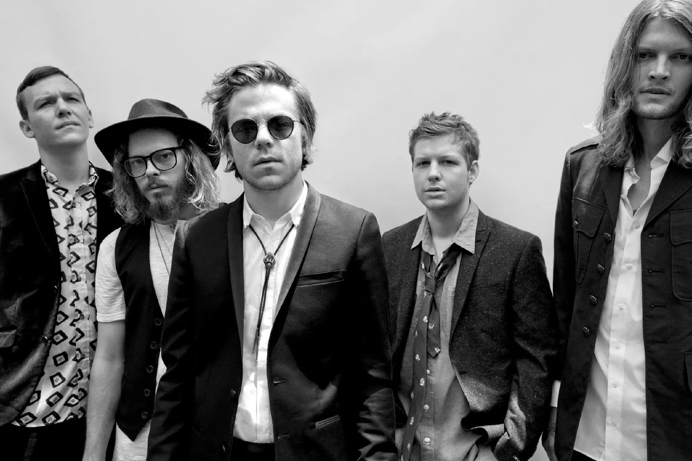
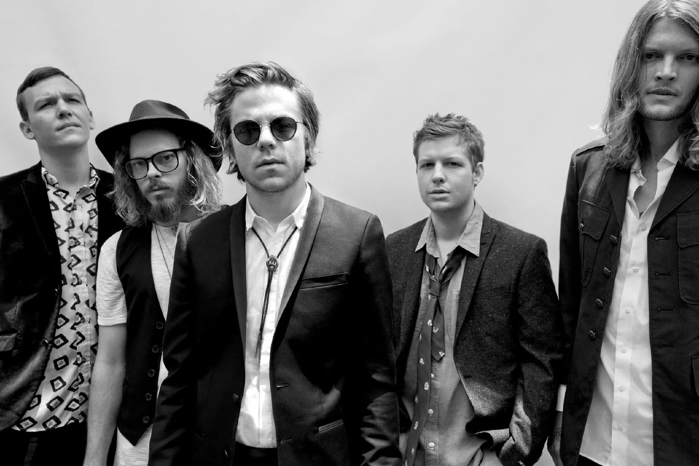

Sobre a Banda
Cage the Elephant é uma banda de rock norte-americana, de Bowling Green, Kentucky, iniciada em 2006. Eles ganharam o Grammy Award para melhor álbum de rock duas vezes: en 2017 por Tell Me I'm Pretty e em 2020 por Social Cues.
Cage the Elephant é uma banda de rock norte-americana, de Bowling Green, Kentucky, iniciada em 2006. Eles ganharam o Grammy Award para melhor álbum de rock duas vezes: en 2017 por Tell Me I'm Pretty e em 2020 por Social Cues.
Sweetie Little Jean
Cage The Elephant
Sweetie Little Jean where did you go?
Everyone's been searching high and low
And your mother's worried sick
Dearest daddy lost his grip
While the whole world's watching
Candlelight vigils being held in silence
On the channel four
And they've knocked every door
Every place you've been before
How long will we let it go?
I think we should just let go
I, I want you back (back)
Let's get back
Lay my weary head against your bones
Where all my troubles will be dead and gone
How long will we let it go?
I think we should just let go
Has melancholy taken you for good?
You know that I would save you if I could
Watched your laughter turn to tears
Then you vanished in thin air
Well we pinned your missing persons picture up
On every mother-loving post
How's it feel to be a ghost?
You're the one I love the most
I, I want you back (back)
Let's get back
Lay my weary head against your breast
Where all my troubles will be laid to rest
I pushed and I pulled 'til I pushed you aside
Now all that is left are the tears that you cried
I'm sorry love for all of the damage done
I only hope that someday to be back beside you
I, I want you back (back)
Let's get back
Lay my weary head against your bones
Where all our troubles will be dead and gone
How long will we let it go?
I think we should just let go
Querido, eu temo que algum dia você escute essa música e encontre o sentido em minhas ações, sinto que perdi-me nas colinas e não conseguiria retornar, ela me encontrou e agora só resta aceitar, eu tentei me desviar desse caminho mas todas as portas me levavam para o mesmo lugar. Não desistam de mim e tragam com suas dores o meu perdão, não me olhem nos olhos pois mesmo que eu não os veja esse contato me faria chorar, não me abracem ou toquem qualquer parte do meu corpo pois tudo que toquei um dia foi destruído e nesse momento eu teria a maior certeza disso, um dia espero que me entendam e mesmo que eu não escute espero que me expliquem a razão da minha razão ser assim, tão quebrada e destrutiva, tão tóxica e letal, eu não queria ser assim mas já não posso escolher o quê quero ser.
Maria - Via Youtube